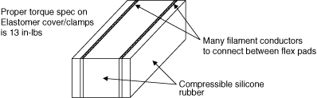
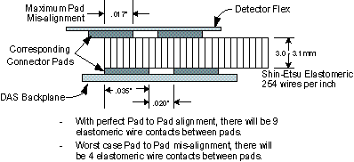
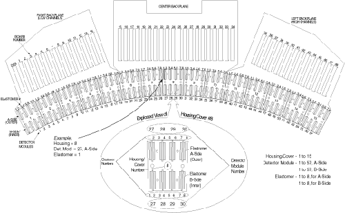

GEMS Proprietary Class: A
Direction 5117807-800, Rev# A
GEMS Proprietary Class: A |
The backplane used on MDAS is separated into three sections: Right, Center and Left. The three backplane boards are connected via a ribbon cable, with a 80-pin connector on each board.
Right Backplane - The Right backplane contains connectors for Converter boards 1 through 14. FET LEDs are located on the Right Backplane (see Illustration 1).
Center Backplane - The Center backplane contains connectors for converter boards 15 through 34. Test Points are available on the Center Backplane to measure Power Supply voltages (see MDAS Pinouts, Jumpers, and LEDs).
Left Backplane - The Left backplane contains connectors for converter boards 35 through 48.
| NOTE: | The pinouts of the backplane connectors are defined in MDAS Pinouts, Jumpers, and LEDs. |
Illustration 1: MDAS LEDs (as viewed with DAS at 12 o’clock)

The twin elastomer is a conductor that consists of two rows of metal filaments embedded in a core of silicon rubber. The solid rubber core is placed between layers of soft silicone rubber.
Illustration 2: Twin Elastomer

The brass filaments are gold plated to be especially resilient. They are treated to spring and can be repeatedly compressed.
The Elastomers are used to make an electrical connection between the Detector flexes and MDAS backplane. Since the output of the Detector is a very low current signal, the connection must be clean from debris and oil, as well as exhibiting proper compression. This compression is made by correct torque of the Flex housing cover and clamp. The torque specification is 13 in-lbs (1.47 N-m).
Illustration 3: Elastomeric Pad Spacing

| NOTE: | For a full size version of this illustration, click on the pdf icon below. |
Media File 1: Full Size Illustration: Detector/DAS Hardware Architecture Map

Illustration 4: Detector/DAS Hardware Architecture Map
